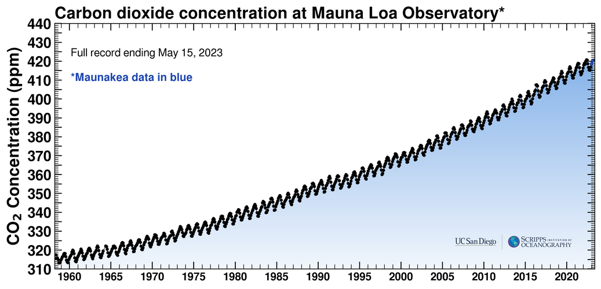
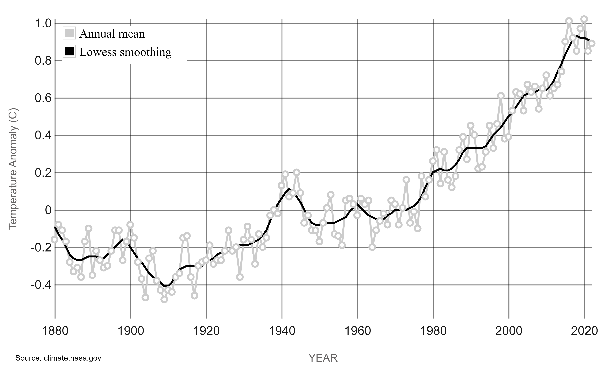
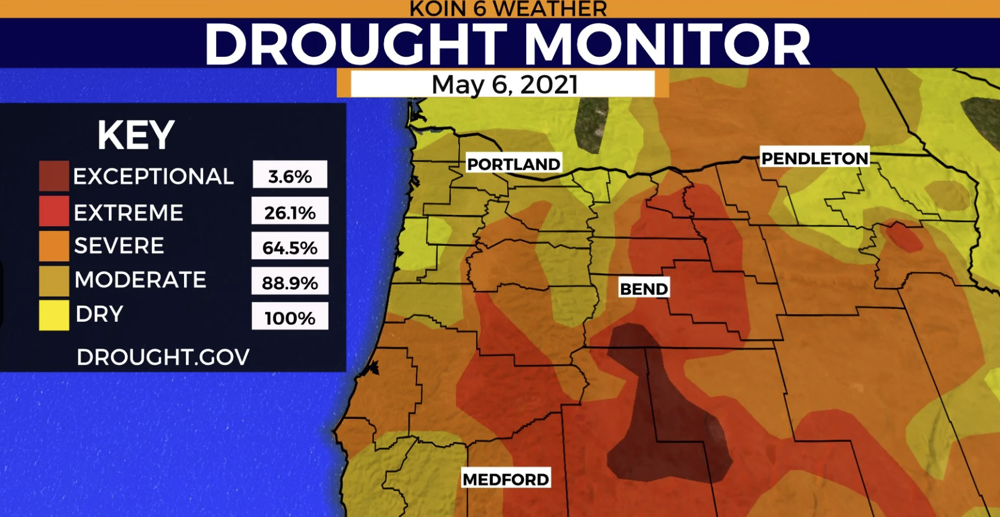
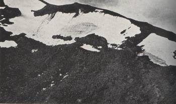

A Tale of Two Mountains
Exposure, Sensitivity, and Adaptive Capacity of the Oregon and Colorado Snow Industries
What's going on?
Since 1950, the overall snowpack in the United States has decreased by 20%1. As this data from the Environmental Protection Agency illustrates, many regions throughout the Western United States specifically are taking a hit to their annual snowfall amounts, with some areas decreasing by nearly 96%!

With this in mind, it is crucial to recognize that a widespread decrease in annual snowfall is also affecting the annual winter season snowpack that develops throughout the mountainous regions of the US. For many mountainside communities, this means that their source of livelihoods, which depend on their ski resorts, ice rinks, or mountain climbing, are being threatened As the effects of climate change continue to intensify across the globe, resorts are forced to address the ongoing crises of water shortages prompted by a decrease in snowmelt and loss of snowpack.
So how are communities fighting back? In this investigation, we will be examining two mountainside communities, Mt. Bachelor (OR), and Aspen Mountain (CO). Census data, physical backgrounds, as well as their current and planned mitigation and adaptation strategies will be discussed, alongside a look into the future for both regions using a predictive model. Will one region prove to be an adaptation champion, or will both highlight concerning trends that come with climate adaptation or mitigation? Let’s find out!
Who's involved? Who's affected?
With a rise in precipitation trends and a decrease in snow-friendly temperatures, resorts around the Western United States are observing notable declines in their overall snowpacks and bases. As snowpack begins to melt earlier and earlier in the year as temperatures rise, this could lead to potentially lower river and stream levels throughout mountainside communities, alongside the failure to properly fill up nearby reservoirs. In turn, this will only lead to freshwater shortages for local communities, a lack of water to host a diverse population of flora and fauna, as well as an overall decrease in year-round snowpack.
But this is not just the problem exclusive to the Western U.S. Mountain communities all around the world are experiencing the effects of climate change, and as a result are finding that rising temperatures and rising chances of precipitation in their regions are melting mountain glaciers and snowpacks faster than they can be replenished. As a result, many of these communities are melting away. You may be wondering what is the perpetrator of these catastrophic global events, and to that we must look at two key pieces of evidence:
The Keeling Curve2, a global measure of atmospheric carbon dioxide, is an ongoing observation and documentation of this compound. Located in the Mauna Loa Observatory at Hawaii, these measurements serve to illustrate an increasing trend in carbon dioxide, one of the biggest contributors to global warming. Serving as a heat trapping compound, carbon dioxide keeps heat within the earth’s atmosphere, so an increase in carbon dioxide means that more and more heat is being packed into the atmosphere at a time. However, as the atmosphere reaches its maximum carbon dioxide capacity, these molecules are then forced to build up elsewhere, such as within our oceans, leading to ocean acidification and higher ocean temperatures.
In addition to this, we are also noticing that as carbon dioxide levels increase, so does overall global temperature. As best illustrated from NASA’s Land-Ocean Temperature Index3, our planet’s temperature anomaly, the overall change in temperature of the earth since pre-industrial times (1850), has increased by nearly 1 degree Celsius. While this may not seem like much, it only takes a single degree to vastly alter storm systems, precipitation patterns, heat patterns, and other climate interactions. With a climate as sensitive as our planet’s, all measures must be taken in order to ensure that warming trends do not continue.
The natural beauty of snow and the countless ecosystems that rely upon it will be put in the face of danger, with more snow dependent species facing challenges unlike they’ve ever seen before. Shrinking snowpack will not only impact the mountains themselves, but also those that look to them for a steady source of income, entertainment, and well-being. Ski resorts may soon lose their snowpack, or most importantly, a reliable source of snowfall. With that, resorts may see a reduction in experiences offered such as snowboarding, skiing, mountain climbing, ice skating, snow tubing, and hiking. Complementary businesses that thrive on the success of these resorts may also be financially disadvantaged as tourism drops. The snow that used to attract a plethora of visitors to these areas may soon become a deserted destination, or a high cost experience that very few can afford.
Where is this happening?
A vast network of people rely on snowpack for their livelihoods, resources, and for entertainment. Various groups that are taking a hit to declines in snowfall and snowpack are: Mountain-dependent communities for tourism purposes , Recreational fishers, skiers, hikers, snowboarders, and boaters , Communities that rely on snowmelt as a source of freshwater and nearby vegetation and wildlife.
Specifically within central Oregon, various water storage sites were well below their annual averages as of 2021 such as the Ochoco, Prineville, Wickiup, Crescent Lake, and Crane Prairie reservoirs. What’s even worse is that during May of 2021, based on a report from Koin 64, the entire state of Oregon was under some sort of drought conditions as seen in the figure below.
For the data (courtesy of the Environmental Protection Agency) presented in our interactive map, it can be seen that the majority of mountain resort sites within the Western U.S. are experiencing some sort of snowpack decline, as indicated by the red dots. An interesting pattern to note is the string of declining snowpack points that form from central Oregon to central California, outlining a clear system of mountains and the estimated 45 resorts that lie within these regions. In addition to this, it must be noted that there are clear clusters of decreasing snowpack along the Idaho-Montana border, Idaho-Wyoming border, throughout central Utah, and throughout central Colorado.
Now let’s take a look at our regions of interest, Mt. Bachelor, OR and Aspen Mountain, CO!
County-Level Context
With a maximum height of 2,764 meters (9,068 feet)5, Mt. Bachelor (located near Bend, Oregon) is known throughout the Northwest for both its lucrative snowfall and thriving ski scene during the wintertime. On average, Mt. Bachelor experiences the highest average snowfall in the month of December, at 103 inches5. With its first ski resort opening in 19586, the Bachelor ski industry has been thriving ever since, but those times may soon change.
Predictive modeling from a business as usual standpoint has shown how much of the snowy terrain many skiers call a snow filled oasis may soon vanish. However you may be wondering how Bachelor's ski seasons may be threatened, especially as their 2022-2023 snow season has been extended to May and their snow base has not been as plentiful as during their 2017 season7. But as the nature of climate change through predictive modeling will show, some destinations are shown to increase in snowpack, while others will not be as fortunate.

The city of Aspen, Colorado is a vast landscape that houses a strong wintertime climate as well as various ski resorts. It has peaks topping at around 12,000 feet at its highest point! The mountain is home to the Aspen Mountain Ski resort, alongside the famous Rocky Mountains. The city apparently receives an average of 300 inches of snowfall annually, and has experienced lucrative ski resorts after the first ski lift was constructed for the city in 19468. The lowest temperatures of the year hit the city from December to January at a chilling 14 degrees Fahrenheit (-10 degrees Celsius) and can rise to 59 degrees Fahrenheit (or 15 degrees Celsius)9.Snowfall is a huge ordeal in the city, mainly since it fuels many of the economies that have taken root there. Mountain resorts, skiing destinations, and tourist attractions have all drawn in millions of visitors into Aspen over the years.
In terms of our interest areas, Bend, Oregon is the city home to Mt. Bachelor, and as of July 2021 has a population of 102,05910. It has a mainly white population at 89.6% based on US Census data with a median household income of $74-253 from 2017-2021. However, there is a startling trend that 1 in 10 people in Bend are homeless. And as we will soon see, warming climate trends are sure to impact the entire community of Bend and Bachelor from the bottom up.
For Aspen Mountain in Colorado, snowfall is a huge ordeal in the city, mainly since it fuels many of the economies that have taken root there. Mountain resorts, skiing destinations, and tourist attractions have all drawn in millions of visitors into Aspen over the years. Despite having only a population of around 7,721 people, Aspen appears to be in a very desired and wealthy area with the average annual salary being $77,669 in 202011.
This places the entire city in the higher bracket in terms of income considering the fact that the median annual income out of the entire United States in 2022 was $54,13212. The US Census data for 2022 shows that 90% of the population is white, 78.4% are in the civilian labor force, and that there are nearly twice as many man-owned businesses than female-owned businesses.11
Local Context: Bachelor
As each summer seasons continue to show an upwards trend of warming, the year round snowpack for Mt. Bachelor continues to melt despite intensifying snow seasons. Seeing that this trend is predicted to continue, this may result in lower river/stream levels, decrease in available freshwater for Bend and local wildlife, as well as a drop in optimal mountain climbing seasons, which depends on completely frozen and firm rocks1. As local Bend outlet The Bulletin reports, community events have already begun to get canceled such as Nordic skiing as the area experiences a decrease in recreational snowfall. While some have suggested the use of snowmakers similar to Aspen Mountain, this idea was largely rejected due to their destructive environmental impact7.
Overall, Mt. Bachelor's environment and surrounding regions are bound to take hit after hit as climate change worsens, depleting the area of reliable snowfall, threatening available water supplies, and putting a stain on the snow industry. When it comes to vulnerability, there are countless groups who have the possibility to suffer. Seeing that 10% of Bend’s recorded population is already suffering from homelessness4, this group may grow if warming in the region becomes catastrophic to the tourism industry. The Mt. Bachelor Ski Resort community has a fair chance of facing a plethora of hardships to come: from lack of reliable snowfall to a shrinking winter season. These factors could in turn result in a spike in snow experience pricing, putting events like skiing or snowboarding out of reach for the average person. In addition, the potential depletion of water from local streams from a lack of sufficient snowpack could result in premature flooding as the winter season shortens, as well as result in insufficient amounts of snow melt freshwater needed to get through a brutal summer season.
Changes in snowpack melt, snowfall, and the overall vulnerability of the region has been an ongoing trend just as global warming has been for the past several decades. In the 1980s, Mt. Bachelor was home to the Dutchman Glacier, a vast glacial system that spanned from nearly the top of the mountain down towards the northeast5. It was a popular skiing destination for many resort goers, that is until it gradually began to lose its annual accumulation rates, and eventually succeeded. In 2015, only a remnant piece of ice remained in the place that was home to the massive glacier that countless snow lovers enjoyed venturing across. This not only goes to show that massive changes have already taken place on Mt. Bachelor, but serves as an indicator of how sensitive the region truly is in the face of climate change, and how additional regional temperature increases may result in other mountain features to follow suit.
Local Context: Aspen
Due to climate change, it seems that Aspen Mountain is also experiencing more and more drought related cases and weather events. In 2022 for example, the city experienced anywhere between a moderate drought to an abnormally high drought within town limits16. Due to the severity and increasing intensity of these occurrences, the city of Aspen is looking to diversify and increase their water resources. As of 2021, they had been utilizing water resources from Castle Creek and Maroon Creek, but upon further analysis of these areas experts found that both were highly susceptible to drought, wildfires, and avalanches from the nearby mountainous areas17.
A few potential adaptation methods proposed have been the creation of wells to draw out groundwater and creating a large storage area for the city to store water generated by the creeks to be used during times of drought. Due to a legal battle in the courts between the city and various other entities, the city of Aspen is not allowed to construct dams or reservoirs in their creeks, all in order to better protect and preserve the natural beauty and value of the wildlife there. Due to these disagreements, the city is currently searching for better alternatives, some of which include scouting out sites that could be used as water storage sites for when a time of drought crosses their paths once more.
Also according to a report18, climate change will also shake up the entire ecosystem as temperatures rise. While their report acknowledges the presence of unpredictability within the Aspen ecosystem, some potential changes brought about by global warming could be increased vegetation susceptibility. One species in particular is the spruce-fir, and that climate change-induced susceptibility will drive forward the intensity of spruce beetle infestations throughout the summer during times of drought and water scarcity. In addition, the entire city may begin to become vulnerable to spongy moth invasions.
These invasive species enjoy eating away at as many leaves on trees as possible, effectively removing their ability to photosynthesize in the process. This could spell out major trouble for the entire Aspen forest ecosystem if spongy moth populations were to take root. And while temperature ranges are to be increased during winter and summer seasons, an increased summer duration means that insect populations can thrive for longer periods, and could lead to more insect outbreaks.
With this information in mind, there are countless populations that could be affected by these future changes in the face of regional warming, which include but are not limited to: The city of Aspen, local areas that rely on Aspen Mountain snowmelt for freshwater, hunters, fishers, the local spruce fir industry, the resort industry, and those that benefit from the extrinsic beauty of both Aspen Mountain and its surrounding forests.
For more information on Aspen Mountain, check out the following story map by Cassidy Ochoa that goes into greater detail on the area Here!
Forecasted Snowpack Changes
A predictive model, published in Lute et al., 202219, fashions a potential snowfall forecast expected for the Western United States for the last 30 years at the end of this century, under an RCP (representative concentration pathway) of 8.5. The model forecasts snow water equivalent (SWE), which is the amount of water that makes up a given amount of snow. The slider highlights regional and local SWE forecasts for the month of May, averaged between 2071-2100.
This model may predict the future of snowfall for these regions as it creates a forecast based on precipitation predictions using recent climate data under a specific RCP model. In other words, if we continue to emit and expand our carbon dioxide emissions at our current rate of growth, we can expect a snowfall season to potentially look like this by the end of the century. So, what do our regions of interest have in store in terms of adjusting to these and more future climate changes? Scroll on to find out!
Comparison of Study Areas
As climate change through warming regional temperatures and increasing levels of precipitation take hold, the communities of Mt. Bachelor and Aspen Mountain are faced with two choices: Either to adapt and change to face the future or to potentially perish altogether. For both groups, the decision was simple: Adaptation and mitigation were key.
In the comparative venn diagram, the city of Bend near Mt. Bachelor has committed to several key mitigation strategies which include the creation of climate friendly areas20. These regions are places where city citizens can meet most of their everyday needs without the use of a car or other form of transportation. This could mean placing a high rise apartment or condo building with a main level that houses a gym, office spaces, grocery, and entertainment outlets right at the convenience of the resident! This way, less carbon emissions are used by citizens to drive to work, get food, or go to entertainment destinations.
In terms of transportation, Bend is working towards improving the sustainability of their transportation sector20. To accomplish this, they aim to develop more community transit, walking/biking paths, and electric vehicle benefits. This way, more incentives and quality improvements are brought to various aspects of public transportation that are currently not as developed in the region to further drive down the use of fossil fuels. Promoting the reduction of overall consumer consumption is also playing a role in mitigating carbon emissions and by extension carbon effects on the region21.
Finally, a massive change to the Mt. Bachelor resort that was put forth was a multiyear expansion, one that over a decade added a ski lift, bike park, zip line, and hiking trails22. While at first this may seem odd considering the impacts that global warming is having on the mountain, it can also be seen as both a stepping stone and adaptation method. Adding more winter based activities like ski lifts increases the capacity of the resort for the remaining ski seasons that do remain in the future. This in turn will yield higher profits, and funnel additional revenue for the resort to continue to make either more adaptations or further increase its capacity and revenue for as long as there can be profitable winters.
However, creating additional activities that resort goers can experience during non-skiing seasons is crucial to their success as snowfall levels continue to dissipate. Through the creation of a bike park, zip line, and hiking trails, it certainly seems that the resort is taking meaningful strides needed to adapt to their warming region. By offering resort guests a plethora of other non-snow dependent options, they can further increase their revenue and continue to support their resort for years to come.
As for Aspen Mountain, the Aspen Mountain Resort alongside the city of Aspen have taken a more vocal and direct approach to their warming area. In 2022, a Mountain Art installation was created and placed on the mountain23. It displayed a gondola melting into the ground, which served to represent the impact that climate change was having on the ski industry as a whole. Unlike Bend and Mt. Bachelor, this action served as a strong political and educational symbol as opposed to a mitigation or adaptation strategy. By communicating the effects that global warming is having on their industry, they hope that others will take measures to help mitigate carbon emissions in their own lives or work to further innovate the sustainability of the ski industry as a whole.
Another similar action the city of Aspen took was hosting the sixth Global meeting of the Mountain Partnership to drive change for all mountain communities23. These summits allowed representatives from ski resorts and industries across the world to assemble and discuss both current climate conflicts they’ve experienced as well as offer invaluable advice and brainstorm potential solutions for all involved. This not only illustrates the unity and solidarity involved between all global snow dependent communities, but also shows the enthusiasm to search for solutions. Events like these also garner much needed media attention for the group, so facing climate change head on together is much more impactful than tending to their own individual communities alone.
For the Aspen Mountain Resort, a change is that they have implemented snowmakers and snow guns in order to create a reliable amount of snowfall for the mountainside24. In doing this however, they have also run into water supply issues needed to generate the snow for the mountain. After being refused the rights to use water from the local Castle and Maroon Creeks17, the resort settled on buying water directly from Aspen for recreational snowmaking, which the resort continues to do to this day. While a compromise was met, increasing amounts of domestic water are still being used for this endeavor, which means that as the temperatures increase and conditions for snowpack become suboptimal, more and more snow and other cooling techniques will be needed in order to keep the snow resort afloat.
Similarly to Mt. Bachelor near Bend, the Aspen Mountain Resort has also made plans to expand their resort by constructing gondolas, summertime cabins, renovating their oldest restaurant, and adding a new ski lift to increase overall resort capacity23. In turn, this will generate additional revenue during winter (which is only forecasted to shrink based on our predictive model previously visited).
By having summertime cabins and renovating their restaurant, they are making the transition to implementing more year-round experiences, but continue to double down on ski season activities through the construction of gondolas and a new ski lift. Paired with the use of their snowmakers, this does make sense for the resort and given their resourceful economic background. However, it is crucial to recognize that with warming temperatures, the need for additional resources vital to the wellbeing of the snowpack will be needed.
Overall, the snow water equivalent models have predicted both a shorter winter season and less snowfall overall for the entirety of the Western U.S, and with it have come a plethora of predicted weather conditions, wildlife impacts, and snow-dependent community outcomes.
With our investigation between Aspen Mountain and Mt. Bachelor, we found that while both are expected to be impacted by the effects of climate change, Mt. Bachelor is taking a mitigation-heavy approach while Aspen Mountain is taking a more adaptive approach.
Both communities continue to expand and make plans to expand their resorts through either increasing wintertime capacities or through the implementation of year-round mountain activities.
While one could argue that mitigation measures are meager on such a small scale or that the implantation of snowmakers may turn out to be more of a maladaptation method than an adaptive strategy, what matters most is that both regions are making changes, and with time will shape them into more sustainable options. In the end, both communities have shown the urge and enthusiasm to fight back against climate change in some form or another, and with determination and innovation that both groups will thrive as the world changes around them.